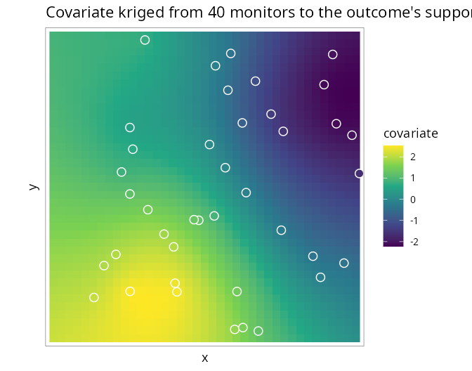

6. Covariates measured on a different support
Source:vignettes/misaligned-covariates.Rmd
misaligned-covariates.RmdCovariates are often observed on a different support from
the outcome: air quality at a few monitoring stations, temperature on a
coarse climate grid, deprivation on census tracts that do not match the
health districts. SDALGCP2 aligns them by
predicting the covariate to the candidate points of the
outcome regions and entering it with an uncertainty-aware (Berkson)
correction. This tutorial is self-contained.
The method
The intensity-scale offset (Tutorial 2) needs the covariate
at the candidate points
.
When
is observed elsewhere we (1) model it as a Gaussian process and
krige it to those points, obtaining a predictive mean
and variance
;
(2) plug these into a Berkson-corrected offset
The
term propagates the prediction uncertainty (plugging in the kriged mean
alone would attenuate
);
as
it recovers the raster case. Derivation: math/confounding-and-misalignment.pdf.
Point support: monitoring stations
The covariate z is observed at 40 scattered monitors (an
sf of points with a z column); the outcome is
counts over an 8×8 lattice.
library(SDALGCP2)
library(sf)
set.seed(123)
zf <- function(xy) 1.5 * sin(xy[, 1] / 4) + 1.2 * cos(xy[, 2] / 5) + 0.5 * xy[, 1] / 20
reg <- st_sf(geometry = st_make_grid(
st_as_sfc(st_bbox(c(xmin = 0, ymin = 0, xmax = 20, ymax = 20))), n = c(8, 8)))
N <- nrow(reg)
# simulate counts from the point-level intensity model (true beta_z = 0.8)
pts <- sda_points(reg, delta = 1.0, method = 3); w <- lapply(pts, function(p) p$weight)
b_true <- sapply(seq_len(N), function(i) {
Z <- cbind(1, zf(as.matrix(pts[[i]]$xy))); log(sum(w[[i]] * exp(as.numeric(Z %*% c(-6, 0.8))))) })
reg$pop <- round(runif(N, 800, 5000))
reg$cases <- rpois(N, reg$pop * exp(b_true))
# the covariate, observed ONLY at 40 monitors
mon <- st_as_sf(data.frame(x = runif(40, 0, 20), y = runif(40, 0, 20)), coords = c("x", "y"))
mon$z <- zf(st_coordinates(mon))Pass the monitors through covariates =; reg
does not need a z column:
fit <- sdalgcp(cases ~ z + offset(log(pop)), data = reg, covariates = list(z = mon))
fit$beta_opt["z"]
#> 0.89 (true 0.8)Internally the covariate is kriged from the monitors to every candidate point:

The covariate’s own spatial model (range, nugget, variance) is
estimated by maximum likelihood; SDALGCP2 then fits the
outcome model with the Berkson-corrected offset.
Areal support: a different partition
If the covariate is reported as averages over other
polygons (e.g. a coarser grid or census tracts), supply those
polygons. SDALGCP2 detects the geometry and uses
aggregated areal kriging, reusing the same C++ kernels that
build the outcome correlation:
# covariate observed as averages over a coarser 4x4 partition
covpoly <- st_sf(geometry = st_make_grid(
st_as_sfc(st_bbox(c(xmin = 0, ymin = 0, xmax = 20, ymax = 20))), n = c(4, 4)))
cpts <- sda_points(covpoly, delta = 1.0, method = 3)
covpoly$z <- sapply(cpts, function(p) mean(zf(as.matrix(p$xy)))) # areal averages
fit_areal <- sdalgcp(cases ~ z + offset(log(pop)), data = reg, covariates = list(z = covpoly))
fit_areal$beta_opt["z"]#> True z effect: 0.80
#> Point support (40 monitors): 0.89
#> Areal support (25 different polygons): 0.85In both cases the covariate effect is recovered from data that were never observed on the outcome’s own units — point monitors, or polygons that do not match the outcome regions.
Notes
- The candidate-point grid that discretises the outcome regions doubles as the common support on which outcome and covariate are aligned.
- Set
berkson = FALSEinSDALGCP2_misaligned()for the naive kriged-mean plug-in (no uncertainty propagation). - Currently the covariate model’s parameter uncertainty is plugged in (its predictive uncertainty is propagated); a fully joint two-stage model is a natural extension. ```